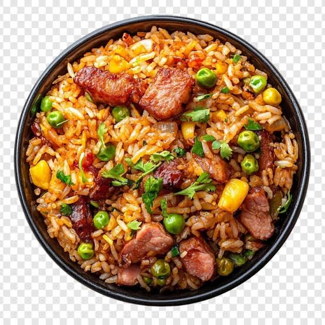

Fried rice is a popular Asian dish made with cooked rice, fresh vegetables, flavorful seasonings, and optional protein such as chicken, beef, shrimp, or eggs. To prepare it, start by cooking rice and allowing it to cool completely, preferably using rice prepared a day in advance to achieve a better texture. Heat oil in a large wok or frying pan over medium-high heat, then add chopped garlic, onions, carrots, green beans, and bell peppers. Stir-fry the vegetables for a few minutes until slightly tender but still crisp. Add beaten eggs and scramble them until fully cooked. If using chicken, beef, or shrimp, cook them separately or add them to the pan and ensure they are thoroughly cooked before proceeding. Season the mixture with salt, black pepper, soy sauce, and a little oyster sauce for additional flavor. Next, add the cooled rice to the wok and stir-fry continuously, breaking up any lumps and mixing it evenly with the vegetables, eggs, and protein. Cook over high heat for approximately 3–5 minutes, allowing the rice to absorb the seasonings while developing a slightly smoky, savory flavor. Add a little sesame oil and chopped spring onions toward the end for extra aroma and freshness. Taste and adjust the seasoning with additional soy sauce or pepper if necessary. Once everything is heated thoroughly and evenly combined, remove the fried rice from the heat and serve immediately. It pairs well with chili chicken, sweet and sour chicken, grilled meat, or other Asian-style dishes.